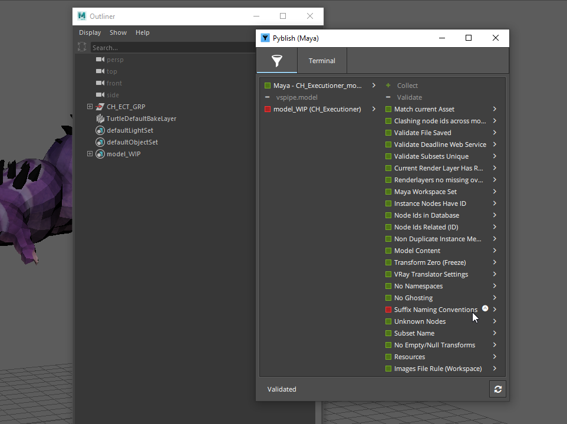
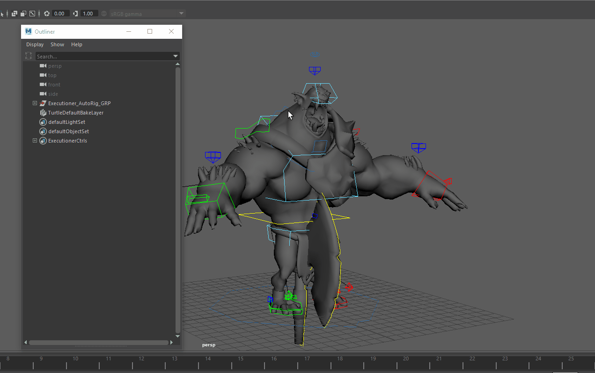

Maya
VSPipe global tools
Working with VSPipe in Maya
Publishing models
Intro
Publishing models in Maya is pretty straightforward. Create your model as you
need. You need to adhere to specifications of your studio that can be different
between studios and projects but by default your geometry has to be named properly.
For example sphere_GEO or cube1_GEO. Geometry needs to have freezed transformations
and must reside under one group, for example model_GRP.
Creating instance
Now create Model instance from it to let VSPipe know what in the scene you want to publish. Go VSPipe → Create... → Model
Asset field is a name of asset you are working on - it should be already filled
with correct name as you've started Maya or switched context to specific asset. You
can edit that field to change it to different asset (but that one must already exists).
Subset field is a name you can decide on. It should describe what kind of data you
have in the model. For example, you can name it Proxy to indicate that this is
low resolution stuff. See Subset.
Read-only field just under it show final subset name, adding subset field to name of the group you have selected.
Use selection checkbox will use whatever you have selected in Outliner to be
wrapped in Model instance. This is usually what you want. Click on Create button.
You'll notice then after you've created new Model instance, there is new set
in Outliner called after your subset, in our case it is model_WIP.
And that's it, you have your first model ready to publish.
Now save your scene (if you didn't do it already). You will notice that path
in Save dialog is already set to place where scenes related to modeling task on
your asset should reside. As in our case we are working on asset called
Executioner and on task model, path relative to your project directory will be
project_XY/assets/CH/CH_Executioner/work/model. Let's save our scene as CH_Executioner_model_v001.
Publishing models
Now let's publish it. Go VSPipe → Publish.... You will be presented with following window:
Note that content of this window can differs by your pipeline configuration. For more detail see Publisher.
Items in left column are instances you will be publishing. You can disable them by clicking on square next to them. Green square indicate they are ready for publishing, red means something went wrong either during collection phase or publishing phase. Empty one with gray text is disabled.
See that in this case we are publishing from scene file CH_Executioner_model_v001.mb in
Maya model named model_WIP (CH_Executioner).
Right column lists all tasks that are run during collection, validation, extraction and integration phase. White items are optional and you can disable them by clicking on them.
Lets do dry-run on publishing to see if we pass all validators. Click on flask icon at the bottom. Validators are run. Ideally you will end up with everything green in validator section.
Fixing problems
To make things interesting, I intentionally forgot to name the group
on mesh_Head_Horns as I know it will trigger validator to turn red.

You can see our model is now marked red in left column and in right we have
red box next to Suffix Naming Conventions validator.
You can click on arrow next to it to see more details:
From there you can see in Records entry that there is problem with mesh_Head_Horns.
Some validators have option to fix problem for you or just select objects that
cause trouble. This is the case with our failed validator.
In main overview you can notice little up arrow in a circle next to validator
name. Right click on it and you can see menu item select invalid. This
will select offending object in Maya.
Fix is easy. Without closing Publisher window we just rename the group with _GRP suffix.
Then we need to reset it to make it notice changes we've made. Click on arrow
circle button at the bottom and it will reset Publisher to initial state. Run
validators again (flask icon) to see if everything is ok.
It should be now. Write some comment if you want and click play icon button when ready.
Publish process will now take its course. Depending on data you are publishing it can take a while. You should end up with everything green and message Finished successfully ... You can now close publisher window.
To check for yourself that model is published, open
Asset Loader - VSPipe → Load....
There you should see your model, named modelMain.
Look development
Look development it helps you with versioning different kinds of shaders and easy switching between them.
Loading model
In this example I have already published model of Executioner. To see how to publish model see Publishing Model.
First of lets start with empty scene. Now go VSPipe → Load...
Here I am loading model_WIP, its version 1 for asset Executioner. Just right-click
on it and select Reference (ma). This will load model into scene as ma.
Now you can close Loader window.
Creating look
Now you can create whatever look you want. Assign shaders, textures, etc. to model. In my case, I assigned simple Arnolds aiSurfaceShader and changed its color to red.
I am quite happy with it so I want to publish it as my first look.
Publishing look
Select your model in outliner and ho VSPipe → Create.... From there
select Look. Make sure use selection checkbox is checked.
Mine subset name is Main. This will create Look instance with a name look_WIP.
Close Creator window.
Now save your scene, give it some sensible name. Next, go VSPipe → Publish. This process is almost identical as publishing models, only different Validators and other plugins will be used.
This should be painless and cause no trouble so go ahead, click play icon button at the bottom and it will publish your look.
publishing multiple looks
You can reference same model into scene multiple times, change materials on every instance with what you need. Then on every model create Look instance. When publishing all those Look instances will be published at same time.
Loading looks into models
Now lets see how look are applied. Start new empty scene, load your published model there as before (using Reference (abc)). If you didn't notice until now, there are few yellow icons in left shelf:
Those are shortcuts for Look Manager, Work Files, Load, and Manage (Inventory).
You are interested now in Look Manager - first item with brush icon. Select your Executioner model and open Look Manager.

This is Look Manager window. Yours would be empty until you click Get All Assets or Get Assets From Selection. You can use later to quick assign looks if you have multiple assets loaded in scene. Click on one of those button now.
You should now see all assets and their subsets loaded in scene, and on right side all applicable published looks.
Select you asset and on the right side right click on _WIP look. Apply it.
You notice that Executioner model is now with texture, materials you've published are now applied to it.
That way you can create looks as you want and version them using VSPipe.
Setting scene data
Maya settings concerning framerate, resolution and frame range are handled by VSPipe. If set correctly in config when initialize new project, Maya will validate you have correct fps on scene save and publishing offering way to fix it for you.
For resolution and frame range, use VSPipe → Reset Frame Range and VSPipe → Reset Resolution
Creating rigs
Creating and publishing rigs with VSPipe follows similar workflow as with other data types. Create your rig and mark parts of your hierarchy in sets to help VSPipe validators and extractors to check it and publish it.
Preparing rig for publish
When creating rigs, it is recommended (and it is in fact enforced by validators) to separate bones or driving objects, their controllers and geometry so they are easily managed. Currently VSPipe doesn't allow to publish model at the same time as its rig so for demonstration purposes, I'll first create simple model for robotic arm, just made out of simple boxes and I'll publish it.
For more information about publishing models, see Publishing models.
When you've prepared your hierarchy, it's time to create Rig instance.
Select your whole rig hierarchy and go VSPipe → Create.... Select Rig.
Set is created in your scene to mark rig parts for export. Notice that it has
two subsets - controls_SET and out_SET. Put your controls into controls_SET
and geometry to out_SET. You should end up with something like this:

Publishing rigs
Publishing rig is done in same way as publishing everything else. Save your scene and go VSPipe → Publish. When you run validation you'll mostly run at first into few issues. Although number of them will seem to be intimidating at first, you'll find out they are mostly minor things easily fixed.
-
Non Duplicate Instance Members (ID) - This will most likely fail because when creating rigs, we usually duplicate few parts of it to reuse them. But duplication will duplicate also ID of original object and VSPipe needs every object to have unique ID. This is easily fixed by Repair action next to validator name. click on little up arrow on right side of validator name and select Repair form menu.
-
Joints Hidden - This is enforcing joints (bones) to be hidden for user as animator usually doesn't need to see them and they clutter his viewports. So well behaving rig should have them hidden. Repair action will help here also.
-
Rig Controllers will check if there are no transforms on unlocked attributes of controllers. This is needed because animator should have ease way to reset rig to it's default position. It also check that those attributes doesn't have any incoming connections from other parts of scene to ensure that published rig doesn't have any missing dependencies.
Loading rigs
You can load rig with Loader. Go VSPipe → Load..., select your rig, right click on it and Reference it.
Point Maya Ascii
Workflow is very similar as other data types.
Creating a .ma
To create point cache just create whatever hierarchy you want and animate it. Select its root and Go VSPipe → Create... and select Maya Ascii.
After that, publishing will create corresponding ma files.
Example setup:
Set dressing in Maya
Set dressing is term for easily populate complex scenes with individual parts. VSPipe allows to version and manage those sets.
Publishing Set dress / Layout
Working with Set dresses is very easy. Just load your assets into scene with Loader (VSPipe → Load...). Populate your scene as you wish, translate each piece to fit your need. When ready, select all imported stuff and go VSPipe → Create... and select Set Dress or Layout. This will create set containing your selection and marking it for publishing.
:::note set dress vs layout Currently set dress and layout are functionally identical :::
Now you can publish is with VSPipe → Publish.
Loading Set dress / Layout
You can load Set dress / Layout using Loader (VSPipe → Load...). Select you layout or set dress, right click on it and select Reference Maya Ascii (ma). This will populate your scene with all those models you've put into layout.
Rendering
The VSPipe supports rendering in Maya and is relatively renderer-agnostic so should work with most renderers. It has been tested and used with Redshift and Arnold (mtoa). We usually refer to this task as lighting.
Creating basic render setup
If you want to submit your render to farm, just follow these simple steps.
Preparing scene
Lets start with empty scene. First I'll pull in my favorite Buddha model. VSPipe → Load..., select model and right+click to pop up context menu. From there just click on Reference (abc).
Next, I want to be sure that I have same frame range as is set on shot I am working on. To do this just VSPipe → Reset Frame Range. This should set Maya timeline to same values as they are set on shot in Ftrack for example.
I have my time set, so lets create some animation. We'll turn Buddha model around for 50 frames (this is length of my timeline).
Select model, go to first frame, key Y axis rotation, go to last frame, enter 360 to Channel Editor Y rotation, key it and its done. If you are not sure how to do it, you are probably reading wrong documentation.
Now let set up lights, ground and camera. I am lazy so I create Arnolds Skydome light:
Arnold → Lights → Skydome Light. As ground simple Plane will suffice and I'll set
my perspective view as I like and create new camera from it (CTRL+SHIFT+C) and rename
it from persp1 to mainCamera.
One last thing, I'll assign basic aiSurfaceShader to my Buddha and do some little tweaks on it.
Submitting renders to Deadline
To submit your renders the first thing you'll need to do is create a "renderglobalsDefault" instance. This is what the pipeline uses to recognize it needs to process the renderlayers for submission at publish time.
You can create it through:
Lets create it. Go VSPipe → Create.... There select Render Globals from list. With the render globals created you can do VSPipe > Publish.. to start submitting your scene.
VSPipe will try to connect to render farm and fetch machine pool list.
Creating Render instance will also set image prefix in render settings to VSPipe defaults based on
renderer you use - for example if you render with Arnold, it is maya/<Scene>/<RenderLayer>/<RenderLayer>_<RenderPass>.
There are few setting on Render instance renderglobals_WIP in Attributes Editor:

Few options that needs explaining:
Primary Pool- here is list of pool fetched from server you can select from.Suspend publish Job- job sent to farm will not start render automatically but is in waiting state.Extend Frames- if checked it will add new frames to previous render, so you can extend previous image sequence.Override Existing Frame- will overwrite file in destination if they existsPriorityis priority of job on farmFrames Per Taskis number of sequence division between individual tasks (chunks) making one job on farm.Frames Listyou can submit a sequence as 1-100,300-400 for example.
Now if you run publish, you notice there is in right column new item called
vspipe.renderlayer and in it there is our new layer Beauty (s001) [150-180]. First part is
layer name, second (s001) is asset name and rest is frame range.
You see I already tried to run publish but was stopped by few errors. Lets go through them one by one just to see what we need to set up further in scene for successful publish.
No Default Cameras Renderable is telling me:
Renderable default cameras found: [u'|persp|perspShape']
and so can be resolved by simple change in Main layer render settings.
All I have to do is just remove the persp camera from render settings and add there correct camera.
This leaves me only with Render Settings error. If I click on it to see details, I see it has problem with animation not being enabled:
Animation needs to be enabled. Use the same frame for start and end to render single frame
Go to Render Settings, select your render layer and in Common tab change
in File Output Frame/Animation ext to whatever you want, just not Single Frame.
Set Frame Range Start frame and End frame according your needs.
If you run into problems with image file prefix - this should be set correctly when
creating Render instance, but you can tweak it. It needs to begin with maya/<Scene> token
to avoid render conflicts between DCCs. It needs to have <RenderLayer> and
<RenderPass>. If you have more then one renderable cameras, add <Camera> token.
Sane default for arnold, redshift or renderman is:
maya/<RenderLayer>/<RenderLayer>_<RenderPass>
Doing VSPipe → Reset Resolution will set correct resolution on camera.
Scene is now ready for submission and should publish without errors.
Tip
When publishing is finished, job is created on farm. This job has one more dependent job connected to itself. When render is finished, this other job triggers in and run publish again, but this time it is publishing rendered image sequence.